Puedes ir al santuario desde que llegas a la región de la torre de Farone. Lo encuentras situado al noroeste del Poblado Onaona.
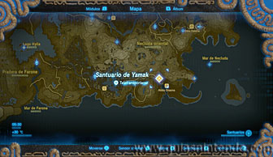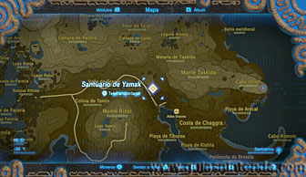
Vas a tener que usar varias veces el módulo imán para poder avanzar dentro de este santuario. Nada más comenzar verás una gran balanza con un bloque de hierro. Sube al plato donde está el bloque y después trasládalo al otro plato para elevarte.
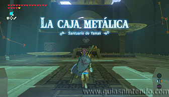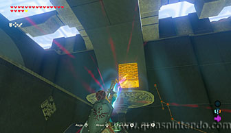
En la siguiente sala solo debes derrotar a un miniguardián. Después podrás coger un cofre con el imán que está tras unos barrotes.
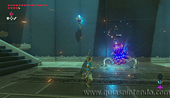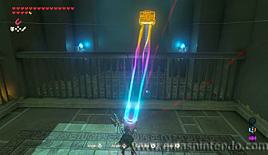
Dentro encontrarás una Espada real, después usa el mismo cofre para colocarlo sobre un interruptor en el suelo (también está detrás de unos barrotes). Así abrirás el camino y podrás continuar.
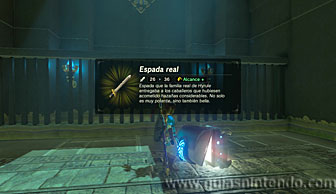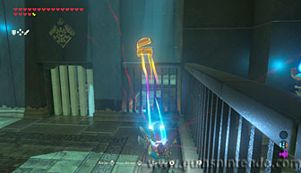
Al cruzar, vuelve a coger el mismo cofre y ve hasta el final de la sala. Allí hay 4 plataformas y debes colocar el cofre en la que está más cerca del segundo cofre que se ve. Ahora podrás subir a esa plataforma y alcanzar el cofre que contiene un trozo de Ópalo).
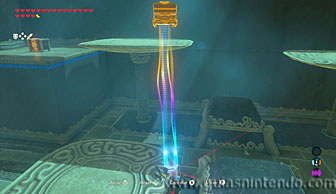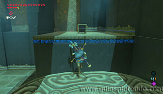
Desde allí arriba coge de nuevo el cofre que colocaste en la plataforma y colócalo en la esquina opuesta para que esa plataforma baje.
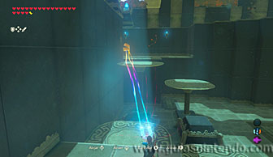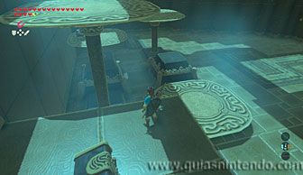
Ahora baja del lugar donde te encuentras y sube en la plataforma que acabas de bajar (donde está el cofre). A continuación coloca ese cofre en la primera plataforma de nuevo (para elevarte).
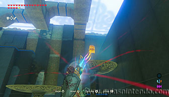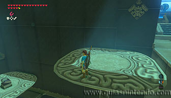